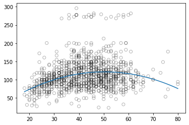

Splines in Python¶
The following code tutorial is mainly based on code provided byJordi Warmenhoven. To learn more about the regression methods, review “An Introduction to Statistical Learning” from James et al. (2021).
Data¶
Import¶
import pandas as pd
df = pd.read_csv('https://raw.githubusercontent.com/kirenz/datasets/master/wage.csv')
df
| Unnamed: 0 | year | age | maritl | race | education | region | jobclass | health | health_ins | logwage | wage | |
|---|---|---|---|---|---|---|---|---|---|---|---|---|
| 0 | 231655 | 2006 | 18 | 1. Never Married | 1. White | 1. < HS Grad | 2. Middle Atlantic | 1. Industrial | 1. <=Good | 2. No | 4.318063 | 75.043154 |
| 1 | 86582 | 2004 | 24 | 1. Never Married | 1. White | 4. College Grad | 2. Middle Atlantic | 2. Information | 2. >=Very Good | 2. No | 4.255273 | 70.476020 |
| 2 | 161300 | 2003 | 45 | 2. Married | 1. White | 3. Some College | 2. Middle Atlantic | 1. Industrial | 1. <=Good | 1. Yes | 4.875061 | 130.982177 |
| 3 | 155159 | 2003 | 43 | 2. Married | 3. Asian | 4. College Grad | 2. Middle Atlantic | 2. Information | 2. >=Very Good | 1. Yes | 5.041393 | 154.685293 |
| 4 | 11443 | 2005 | 50 | 4. Divorced | 1. White | 2. HS Grad | 2. Middle Atlantic | 2. Information | 1. <=Good | 1. Yes | 4.318063 | 75.043154 |
| ... | ... | ... | ... | ... | ... | ... | ... | ... | ... | ... | ... | ... |
| 2995 | 376816 | 2008 | 44 | 2. Married | 1. White | 3. Some College | 2. Middle Atlantic | 1. Industrial | 2. >=Very Good | 1. Yes | 5.041393 | 154.685293 |
| 2996 | 302281 | 2007 | 30 | 2. Married | 1. White | 2. HS Grad | 2. Middle Atlantic | 1. Industrial | 2. >=Very Good | 2. No | 4.602060 | 99.689464 |
| 2997 | 10033 | 2005 | 27 | 2. Married | 2. Black | 1. < HS Grad | 2. Middle Atlantic | 1. Industrial | 1. <=Good | 2. No | 4.193125 | 66.229408 |
| 2998 | 14375 | 2005 | 27 | 1. Never Married | 1. White | 3. Some College | 2. Middle Atlantic | 1. Industrial | 2. >=Very Good | 1. Yes | 4.477121 | 87.981033 |
| 2999 | 453557 | 2009 | 55 | 5. Separated | 1. White | 2. HS Grad | 2. Middle Atlantic | 1. Industrial | 1. <=Good | 1. Yes | 4.505150 | 90.481913 |
3000 rows × 12 columns
Create label and feature¶
We only use the feature age to predict wage:
X = df[['age']]
y = df[['wage']]
Data split¶
Dividing data into train and test datasets
from sklearn.model_selection import train_test_split
X_train, X_test, y_train, y_test = train_test_split(X, y, test_size=0.3, random_state = 1)
Data exploration¶
Visualize the relationship between age and wage:
import seaborn as sns
# seaborn settings
custom_params = {"axes.spines.right": False, "axes.spines.top": False}
sns.set_theme(style="ticks", rc=custom_params)
# plot
sns.scatterplot(x=X_train['age'], y=y_train['wage'], alpha=0.4);

Simple regression¶
from sklearn.linear_model import LinearRegression
lm = LinearRegression()
lm.fit(X_train,y_train)
LinearRegression()
print(lm.coef_)
print(lm.intercept_)
[[0.72106369]]
[80.58924709]
from sklearn.metrics import mean_squared_error
# Training data
pred_train = lm.predict(X_train)
rmse_train = mean_squared_error(y_train, pred_train, squared=False)
# Test data
pred_test = lm.predict(X_test)
rmse_test =mean_squared_error(y_test, pred_test, squared=False)
# Save model results
model_results_lm = pd.DataFrame(
{
"model": "Linear Model (lm)",
"rmse_train": [rmse_train],
"rmse_test": [rmse_test],
})
model_results_lm
| model | rmse_train | rmse_test | |
|---|---|---|---|
| 0 | Linear Model (lm) | 40.705334 | 41.413848 |
sns.regplot(x=X_train['age'],
y=y_train['wage'],
ci=None,
line_kws={"color": "orange"});

Polynomial regression¶
from sklearn.preprocessing import PolynomialFeatures
# polynomial degree 2
poly = PolynomialFeatures(2)
X_train_poly = poly.fit_transform(X_train)
X_test_poly = poly.fit_transform(X_test)
pm = LinearRegression()
pm.fit(X_train_poly,y_train)
LinearRegression()
# Training data
pred_train = pm.predict(X_train_poly)
rmse_train = mean_squared_error(y_train,
pred_train,
squared=False)
# Test data
pred_test = pm.predict(X_test_poly)
rmse_test =mean_squared_error(y_test,
pred_test,
squared=False)
# Save model results
model_results_pm = pd.DataFrame(
{
"model": "Polynomial Model (pm)",
"rmse_train": [rmse_train],
"rmse_test": [rmse_test],
})
results = pd.concat([model_results_lm, model_results_pm], axis=0)
results
| model | rmse_train | rmse_test | |
|---|---|---|---|
| 0 | Linear Model (lm) | 40.705334 | 41.413848 |
| 0 | Polynomial Model (pm) | 39.823165 | 40.344788 |
# plot
sns.regplot(x=X_train['age'],
y=y_train['wage'],
ci=None,
order=2,
line_kws={"color": "orange"});

Cubic spline¶
We use the module patsy to create non-linear transformations of the input data. We will fit 2 models with different number of knots.
from patsy import dmatrix
# Generating cubic spline with 3 knots at 25, 40 and 60
transformed_x = dmatrix(
"bs(train, knots=(25,40,60), degree=3, include_intercept=False)",
{"train": X_train},return_type='dataframe')
transformed_x.head()
| Intercept | bs(train, knots=(25, 40, 60), degree=3, include_intercept=False)[0] | bs(train, knots=(25, 40, 60), degree=3, include_intercept=False)[1] | bs(train, knots=(25, 40, 60), degree=3, include_intercept=False)[2] | bs(train, knots=(25, 40, 60), degree=3, include_intercept=False)[3] | bs(train, knots=(25, 40, 60), degree=3, include_intercept=False)[4] | bs(train, knots=(25, 40, 60), degree=3, include_intercept=False)[5] | |
|---|---|---|---|---|---|---|---|
| 1045 | 1.0 | 0.000000 | 0.114796 | 0.618564 | 0.262733 | 0.003906 | 0.0 |
| 2717 | 1.0 | 0.000000 | 0.024796 | 0.477428 | 0.456182 | 0.041594 | 0.0 |
| 2835 | 1.0 | 0.070523 | 0.598567 | 0.319030 | 0.011879 | 0.000000 | 0.0 |
| 2913 | 1.0 | 0.000000 | 0.000272 | 0.241156 | 0.576321 | 0.182250 | 0.0 |
| 959 | 1.0 | 0.000000 | 0.034014 | 0.508194 | 0.426542 | 0.031250 | 0.0 |
We use statsmodels to estimate a generalized linear model:
import statsmodels.api as sm
# Fitting generalised linear model on transformed dataset
cs = sm.GLM(y_train, transformed_x).fit()
# Training data
pred_train = cs.predict(dmatrix("bs(train, knots=(25,40,60), include_intercept=False)", {"train": X_train}, return_type='dataframe'))
rmse_train = mean_squared_error(y_train, pred_train, squared=False)
# Test data
pred_test = cs.predict(dmatrix("bs(test, knots=(25,40,60), include_intercept=False)", {"test": X_test}, return_type='dataframe'))
rmse_test =mean_squared_error(y_test, pred_test, squared=False)
# Save model results
model_results_cs = pd.DataFrame(
{
"model": "Cubic spline (cs)",
"rmse_train": [rmse_train],
"rmse_test": [rmse_test]
})
results = pd.concat([results, model_results_cs], axis=0)
results
| model | rmse_train | rmse_test | |
|---|---|---|---|
| 0 | Linear Model (lm) | 40.705334 | 41.413848 |
| 0 | Polynomial Model (pm) | 39.823165 | 40.344788 |
| 0 | Cubic spline (cs) | 39.726084 | 40.267857 |
import numpy as np
import matplotlib.pyplot as plt
# Create observations
xp = np.linspace(X_test.min(),X_test.max(), 100)
# Make some predictions
pred = cs.predict(dmatrix("bs(xp, knots=(25,40,60), include_intercept=False)", {"xp": xp}, return_type='dataframe'))
# plot
sns.scatterplot(x=X_train['age'], y=y_train['wage'])
plt.plot(xp, pred, label='Cubic spline with degree=3 (3 knots)', color='orange')
plt.legend();

Natural cubic spline¶
transformed_x3 = dmatrix("cr(train,df = 3)", {"train": X_train}, return_type='dataframe')
ncs = sm.GLM(y_train, transformed_x3).fit()
# Training data
pred_train = ncs.predict(dmatrix("cr(train, df=3)", {"train": X_train}, return_type='dataframe'))
rmse_train = mean_squared_error(y_train, pred_train, squared=False)
# Test data
pred_test = ncs.predict(dmatrix("cr(test, df=3)", {"test": X_test}, return_type='dataframe'))
rmse_test =mean_squared_error(y_test, pred_test, squared=False)
# Save model results
model_results_ncs = pd.DataFrame(
{
"model": "Natural cubic spline (ncs)",
"rmse_train": [rmse_train],
"rmse_test": [rmse_test]
})
results = pd.concat([results, model_results_ncs], axis=0)
results
| model | rmse_train | rmse_test | |
|---|---|---|---|
| 0 | Linear Model (lm) | 40.705334 | 41.413848 |
| 0 | Polynomial Model (pm) | 39.823165 | 40.344788 |
| 0 | Cubic spline (cs) | 39.726084 | 40.267857 |
| 0 | Natural cubic spline (ncs) | 39.882574 | 40.325236 |
# Make predictions
pred = ncs.predict(dmatrix("cr(xp, df=3)", {"xp": xp}, return_type='dataframe'))
# plot
sns.scatterplot(x=X_train['age'], y=y_train['wage'])
plt.plot(xp, pred, color='orange', label='Natural spline with df=3')
plt.legend();